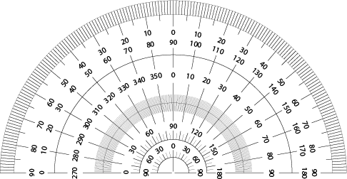
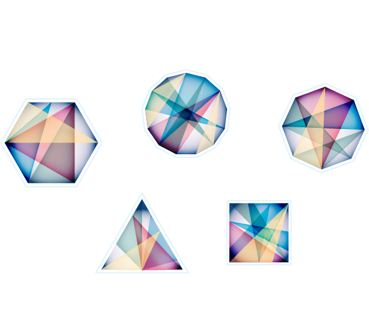

Geometry applies to a lot more than just figuring out the circumference of a square. What you do with figures on a page can easily be connected to the real world to not only geometrical problems, but in art and engineering too!
We are going to give you a couple of basic concepts that help you with the understanding of geometry. Throughout this page, we mainly want to help shine light on areas where geometry is applied. This is because of how many jobs and activities involve the practice and knowledge of geometrical shape and thought for someone to be able to excel at them.
Angle measures are based on each angle in an object to match up to 360 degrees.
In school, you will see lines and rays on graphs which are probably the most easiest concepts to understand.
Lines continue without stop.
Line segments have a starting point and end point.
Rays have a start point but don’t stop.
You want to find the shape of these geometrical figures because they are what lead to basic buildings knowledge of scaled heights, building sizes, and areas for 3-dimensional figures.
